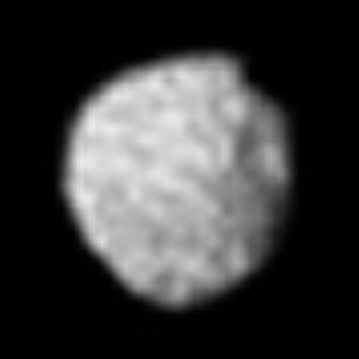

Location of the inner moons and Miranda. S/2025 U 1 not depicted.
There are 29 moons known to orbit Uranus, five of which are round.
27 of the moons are named after characters from plays by Shakespeare and "The Rape of the Lock" by Alexander Pope.
The two most recently discovered ones are still unnamed.
William Herschel discovered the two biggest moons, Titania and Oberon, in 1787.
He claimed to have seen four more moons, but they were never proven to exist,
Umbriel and Ariel were discovered in 1851 by William Lassell and Miranda in 1948 by Gerard Kuiper.
The Voyager 2 flyby brought the number up to 15, discovering numerous inner moons, and Perditia was identified from archival photos from the same mission in 1999.
Sycorax and Caliban are the first irregular moons to be discovered in 1997.
Seven more irregular and two inner were identified until 2003.
The last two additions were in 2024 and 2025.
The one to give the first four moons names was John Herschel, son of William Herschel.
His names were supposed to be those of magical spirits from English literature - Oberon and Titania are named after fairies from William Shakespeare's A Midsummer Night's Dream, and Ariel and Umbriel got names from the respectie slph and gnome from Alexander Pope's The Rape of the Lock
However, the naming convention was broadened to any charater from those authors.
Belinda is the only other satellite with a name from Pope's play.
Outer moons receive their names from The Tempest, with the exception of the prograde Margaret, which got its name from Much Ado About Nothing.
The Uranian satellites can be classified into inner regular, round, and irregular moons.

Puck, the biggest irregularly-shaped Uranian moon
The 14 inner moons orbit within Miranda's orbit, the closest to Uranus of the five round moons.
Cordelia and Ophelia, the two innermost satellites, are shepherds of Uranus's ε ring.
Next is S/2025 U 1, which is a small moonlet.
After that are Bianca, Cressida, Desdemona, Juliet, Portia, and Rosalind, which make a group of their own.
Separated by a gap, the next three are Cupid, Belinda, and Perdita, which are the second subroup of inner moons.
The last two are Puck, the biggest asteroid after the round moons, and Mab, which is a source of material for the μ ring.
Uranus has five round moons - Titania, Oberon, Umbriel, Ariel, and Miranda.
Miranda is the closest to Uranus, followed by Ariel, Umbriel, Titania, and Oberon is the most distant.
All of the moons are relatively dark, with Umbriel being the darkest.
They are made of rock and ice (except Miranda, which is mostly ice) and feature craters, canyons and scarps.
Miranda is unique, as it features extremely large scarps on it's surface like the 20km deep Verona Rupes.
The major moons in order from closest to furthest from Uranus - Miranda, Ariel, Umbriel, Titania, and Oberon
The irregular moons orbit outside Oberon's orbit, the farthest round moon from Uranus.
They orbit in retrograde, with the exception of Margaret.
Three of the retrograde moons are part of one group.
Francisco orbits between Oberon and Caliban with a semi-major axis of 4.3 million km.
After the Caliban group members are Trinculo and the largest of the irregular moons - Sycorax.
The last three satellites after the prograde Margaret are Prospero, Setebos, and Ferdinand.
The Caliban group consists of three retrograde moons.
Their semi-major axes are between 7.1 and 8 million km, their inclinations between 141.4° and 143.9°, and their eccentricities between 0.2 and 0.25.
The three members in order from largest to smallest and closest to most distant are Caliban, Stephano, and S/2023 U 1.
Margaret is the only prograde irregular satellite of Uranus.
It orbits between Sycorax and Prospero.
Voyager 2 was the only spacecraft to visit Uranus in 1986.
It observed the five round satellites and discovered ten smaller ones,
A number of missions to Uranus have been proposed by ESA, NASA, and CNSA.
Such missions are of low priority and are not focused on any of the satellites.
External links